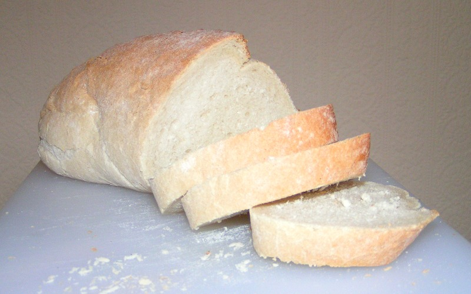

Pao Branco

Delicioso Pao Branco
Ingreditentes:
- Farinha
- Fermento Biologico Seco
- Agua
- Oleo
- Sal a gosto
- Vontade de por a mao na massa
Etapas:
- Pre aqueca o forno a 200 graus
- Prepare a mistura de agua morna 5g de fermento biologico seco e deixe descansar por 5 minutos
- Misture a farinha e o sal em uma vasilha grande
- Adicione oleo a mistura de agua morna e fermento da etapa 2
- A mistura do fermento deve apresentar uma camada de "espuma" e entao esta pronta para ser adicionada a mistura de farinha com sal
- Misture bem todos os ingredientes
- Coloque em formas e insira ao forno ja aquecido
- Espere em media 30 a 45 minutos ou ate que os paes apresentem uma camada deliciosa levemente escura